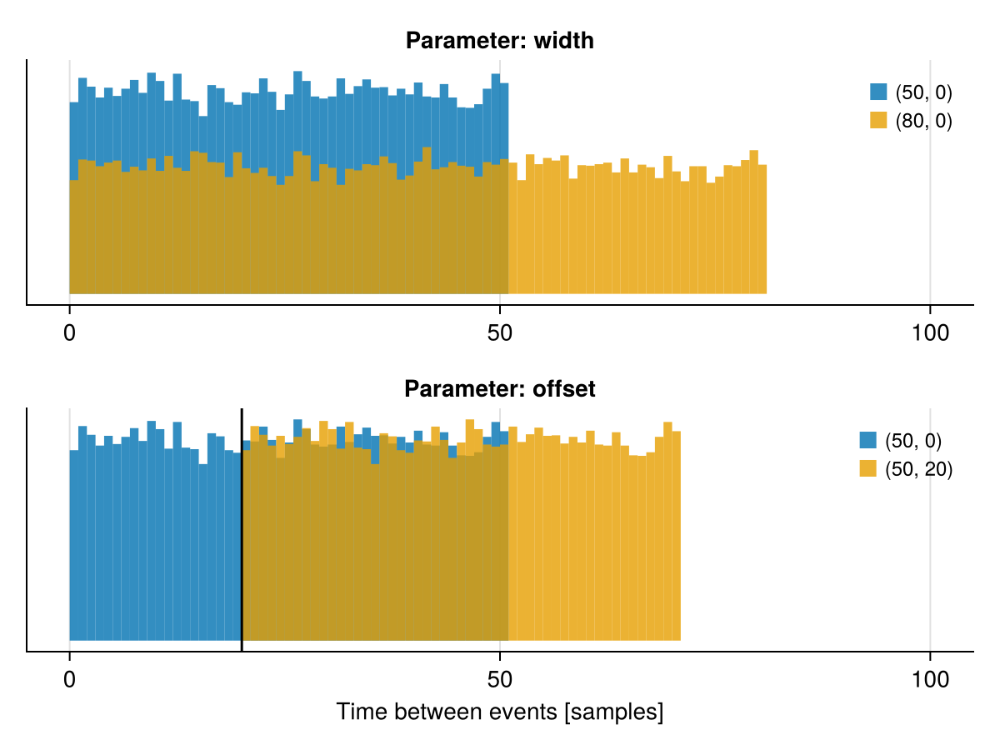
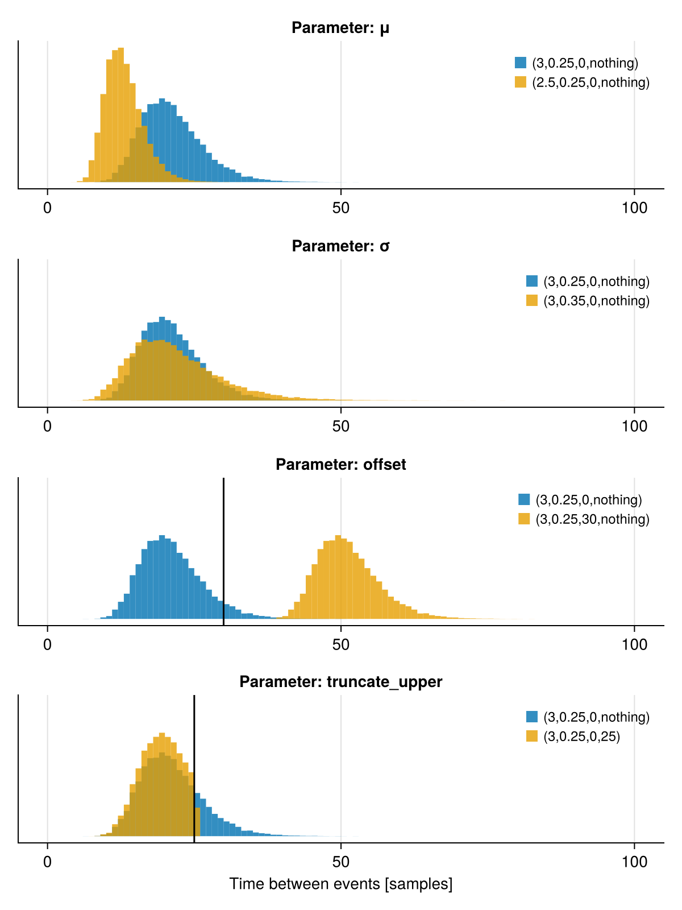

Overview: Onset types
The onset types determine the distances between event onsets in the continuous EEG signal. The distances are sampled from a certain probability distribution. Currently, there are two types of onset distributions implemented: UniformOnset and LogNormalOnset. Both are accompanied by their UniformOnsetFormula and LogNormalOnsetFormula conterparts, which allows to modify the overlap based on the design.
Setup
Click to expand
# Load required packages
using UnfoldSim
using CairoMakie
using Random
# Define a simple design and repeat it 10000.
# This will result in 20000 events i.e. event onsets.
design =
SingleSubjectDesign(conditions = Dict(:cond => ["A", "B"])) |>
x -> RepeatDesign(x, 10000);UniformOnset
The UniformOnset is based on a uniform distribution and has two parameters: width and offset.
Example:
onset_uniform = UniformOnset(; width = 50, offset = 0);The width parameter defines the upper bound of the interval of the uniform distribution (its lower bound is 0) i.e. all values between 0 and width are equally probable.
The offset parameter determines the minimal distance between two events and its value is added to the value sampled from the uniform distribution i.e. it shifts the distribution. Its default value is 0, i.e. no offset.
In the figure below, it is illustrated how the onset distribution changes when changing one of its parameters.
Click to show the code for the figure above
let
f = Figure()
# Define parameter combinations
parameters = [(((50, 0), (80, 0)), "width"), (((50, 0), (50, 20)), "offset")]
axes_list = Array{Any}(undef, length(parameters))
# Create a subplot for each parameter i.e. one for width and one for offset
for (index, (combinations, label)) in enumerate(parameters)
ax = Axis(f[index, 1], title = "Parameter: $label")
axes_list[index] = ax
# Go through all parameter combinations and plot a histogram of the sampled onsets
for (width, offset) in combinations
onsets = UnfoldSim.simulate_interonset_distances(
MersenneTwister(42),
UniformOnset(; width = width, offset = offset),
design,
)
hist!(ax, onsets, bins = range(0, 100, step = 1), label = "($width, $offset)")
if label == "offset" && offset != 0
vlines!(offset, color = "black")
end
end
hideydecorations!(ax)
hidespines!(ax, :t, :r)
axislegend(
ax,
framevisible = false,
labelsize = 12,
markersize = 5,
patchsize = (10, 10),
)
end
axes_list[end].xlabel = "Time between events [samples]"
linkyaxes!(axes_list...)
endLogNormalOnset
The LogNormalOnset is based on a log-normal distribution and has four parameters: μ, σ, offset and truncate_upper.
Example:
onset_lognormal = LogNormalOnset(; μ = 3, σ = 0.25, offset = 0, truncate_upper = nothing);The parameters μ and σ are the location and scale parameter of the log-normal distribution. However, they are not identical to its mean and standard deviation. If a variable $X$ is log-normally distributed then $Y = ln(X)$ is normally distributed with mean μ and standard deviation σ[1].
The offset parameter determines the minimal distance between two events and its value is added to the value sampled from the log-normal distribution i.e. it shifts the distribution. Its default value is 0, i.e. no offset.
The truncate_upper parameter allows to truncate the distribution at a certain sample value. Its default value is nothing, i.e. no truncation.
In the figure below, it is illustrated how the onset distribution changes when changing one of its parameters.
Click to show the code for the figure above
let
f = Figure(size = (600, 800))
# Define parameter combinations
parameters = [
(((3, 0.25, 0, nothing), (2.5, 0.25, 0, nothing)), "μ"),
(((3, 0.25, 0, nothing), (3, 0.35, 0, nothing)), "σ"),
(((3, 0.25, 0, nothing), (3, 0.25, 30, nothing)), "offset"),
(((3, 0.25, 0, nothing), (3, 0.25, 0, 25)), "truncate_upper"),
]
axes_list = Array{Any}(undef, length(parameters))
# Create a subplot for each parameter i.e. one for μ, one for σ etc
for (index, (combinations, label)) in enumerate(parameters)
ax = Axis(f[index, 1], title = "Parameter: $label")
axes_list[index] = ax
# Go through all parameter combinations and plot a histogram of the sampled onsets
for (μ, σ, offset, truncate_upper) in combinations
onsets = UnfoldSim.simulate_interonset_distances(
MersenneTwister(42),
LogNormalOnset(;
μ = μ,
σ = σ,
offset = offset,
truncate_upper = truncate_upper,
),
design,
)
hist!(
ax,
onsets,
bins = range(0, 100, step = 1),
label = "($μ,$σ,$offset,$truncate_upper)",
)
if label == "offset" && offset !== 0
vlines!(offset, color = "black")
elseif label == "truncate_upper" && truncate_upper !== nothing
vlines!(truncate_upper, color = "black")
end
end
hideydecorations!(ax)
hidespines!(ax, :t, :r)
axislegend(
ax,
framevisible = false,
labelsize = 12,
markersize = 5,
patchsize = (10, 10),
)
end
axes_list[end].xlabel = "Time between events [samples]"
linkyaxes!(axes_list...)
endOverlap of subsequent events
The overlap of subsequent events can be indirectly controlled by setting the offset parameter relative to the length of the component basis. Assuming that signal is a component e.g. LinearModelComponent,
- if
offset>length(signal.basis)-> no overlap - if
offset<length(signal.basis)-> there might be overlap, depending on the other parameters of the onset distribution
Design-dependent X-OnsetFormula
For additional control we provide UniformOnsetFormula and LogNormalOnsetFormula types, that allow to control all parameters by specifying formulas
o = UnfoldSim.UniformOnsetFormula(
width_formula = @formula(0 ~ 1 + cond),
width_β = [50, 20],
)
events = generate_events(design)
onsets = UnfoldSim.simulate_interonset_distances(MersenneTwister(42), o, design)
f = Figure()
ax = f[1, 1] = Axis(f)
hist!(ax, onsets[events.cond .== "A"], bins = range(0, 100, step = 1), label = "cond: A")
hist!(ax, onsets[events.cond .== "B"], bins = range(0, 100, step = 1), label = "cond: B")
axislegend(ax)
fVoila - the inter-onset intervals are 20 samples longer for condition B, exactly as specified.
This page was generated using Literate.jl.
- 1Wikipedia contributors. (2023, December 5). Log-normal distribution. In Wikipedia, The Free Encyclopedia. Retrieved 12:27, December 7, 2023, from https://en.wikipedia.org/w/index.php?title=Log-normal_distribution&oldid=1188400077#